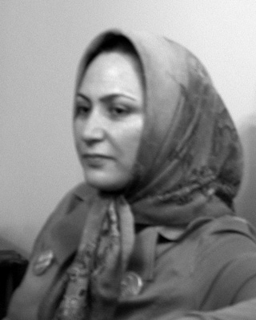
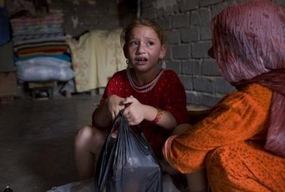
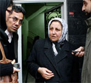
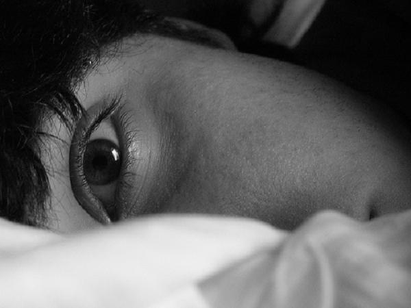
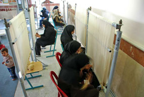
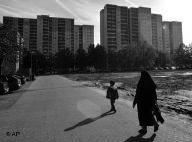
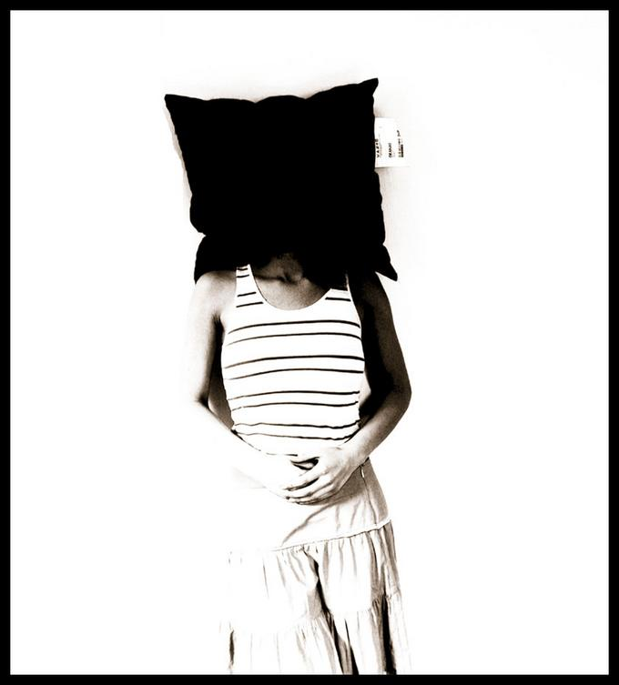
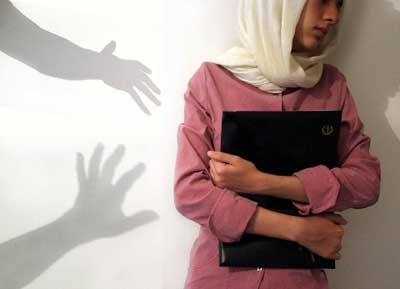
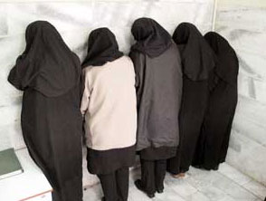

مقالههاى اين بخش
- 20 دی 1387

برنده نوبل صلح ۱۹۹۷:
رادیو فردا / گلناز اسفندیاری
- 19 دی 1387

در واکنش به چاپ مهريه عندالاستطاعه در قباله هاي ازدواج
اعتماد
- 18 دی 1387
گفت و گو با شیرین عبادی و نعمت احمدی، پیرامون موضوعات پیش آمده برای خانم عبادی
رادیو زمانه / مریم محمدی
- 17 دی 1387

بازتاب
بامداد خبر / عسل اخوان
- 16 دی 1387

حمله به شيرين عبادي
روزآنلاین / آسیه امینی
- 16 دی 1387

خشونت علیه زنان
رادیو زمانه / محمدرضا اسکندری
- 15 دی 1387

برگرفته از یادداشتهای روزانه دوبوآر
رادیو زمانه /ترجمه: ناصر غیاثی
- 14 دی 1387
در نوار غزه...
ایونا / تهران
- 14 دی 1387

شیرین عبادی
دویچه وله
- 13 دی 1387

گفت و گوی بهروز کارونی با عبدالفتاح سلطانی در باره هجوم به دفتر شیرین عبادی
رادیو فردا
- 13 دی 1387

پرونده ای که در دادگاه کیفری استان تهران مطرح است
مظنونان / مرجان
- 12 دی 1387

گفت و گو با حسین لطفعلیزاده، عکاس بینالمللی و مسوول انجمن اساواس بم
رادیو زمانه / ایرج ادیب زاده
- 12 دی 1387

نسرین ستوده
دویچه وله /میترا شجاعی
- 12 دی 1387
از نوع دیگر
کانون زنان ایرانی / فریبا فقیهی
- 11 دی 1387
بازتاب
دویچه وله / کیواندخت قهاری
- 11 دی 1387
نسرین ستوده:
صدای امریکا / الهه هيکس
- 10 دی 1387
تکذيب رفع توقيف از کانون مدافعان در گفت و گو با عبادي
روزآنلاین / سارا مقدم
- 9 دی 1387
گفت و گو با سیرن اتس، نویسنده و حقوقدان ترکتبار:
رادیو زمانه / ترجمه: نینا وباب
- 9 دی 1387

خشونت علیه زنان
عصرنو/ سوران شهدی ترجمه: احمد مزارعی
- 8 دی 1387

گفت و گو با محمد مصطفایی
دویچه وله / میترا شجاعی
- 8 دی 1387
تبعیض جنسیتی
خبرنامه امیرکبیر/ ناصر فکوهی
- 7 دی 1387

به بهانهی نمایش آتن- مسکو
میدان / نیما قاسمی
- 7 دی 1387

خشونت علیه زنان
نه از جنس خودم نه از جنس شما / شهاب الدین شیخی
- 6 دی 1387
گفت و گو با نرگس محمدی، عبدالفتاح سلطانی و عبدالکریم لاهیجی پیرامون پلمپ کانون مدافعان حقوق بشر
رادیو زمانه /مریم محمدی
- 5 دی 1387
گناه !!!
عصر نو / نادره افشاری
- 5 دی 1387

زنان در جامعه
میدان زنان / سارا لقایی
- 4 دی 1387

گفت و گو با نسرین ستوده پیرامون تشکیل ستادی برای رعایت حقوق شهروندی
رادیو زمانه / اردوان روزبه
- 4 دی 1387

نگاهی به پدیده فرار دختران و زنان ويژه
جهان نیوز
- 3 دی 1387
حق طلاق با مرد است
کانون زنان ایرانی / سارا کریمی
- 3 دی 1387

حمايت از فعالان حقوق بشر و فعالان ز
روزآنلاین / آسیه امینی
| ... | | | | | 1350 | | | | | ... |